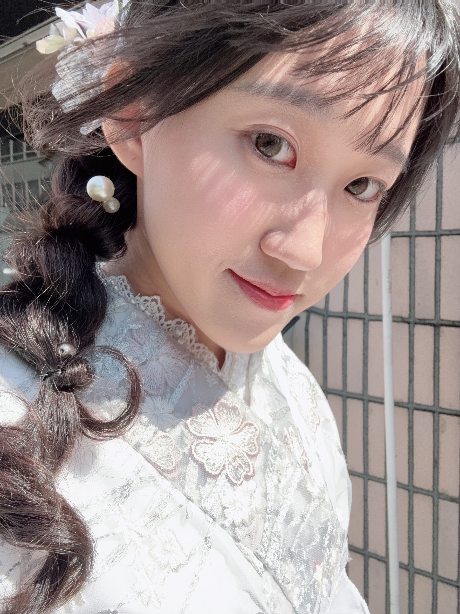

I am an Honours graduate from the University of Amsterdam, PPLE College, majoring in Law. Currently, I serve as a Legal Operations Associate at SHOPLINE, where I specialise in overseeing the end-to-end contract lifecycle. Feel free to explore my journey or connect with me via the links below.